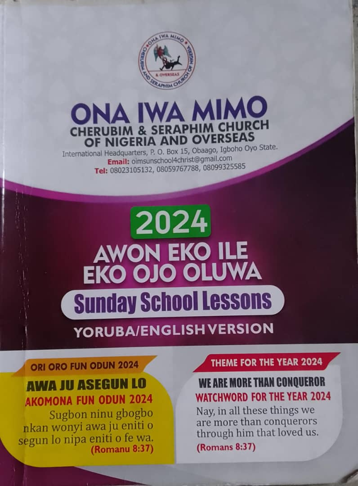

Advertisement

Sunday service program...
Our sunday school program start from 9am to 10am. Then sunday service program start from 10am to 12pm @ O.I.M C&S DIVINE HELP Church.
Get your Holy Bible mobile app by clicking on the Holy Bible image.
Get your C&S Hymn Book mobile app by clicking on the Hymn image.
The church is where God's people are taught God's Word so they can grow spiritually.  Sunday school improves your Bible knowledge, it assist your spiritual growth, it provide place to belong, it helps you build meaniful relationship with God and everyone, and it gives you opportunities to serve and minister. When you know and understand God's Word for yourself, you are more likely to obey the Lord.
The church is where we praise God and remember what he has done in our lives when we're down(Psalm 42:5-6). Praise lifts your spirit, it enlarges your perception of God (Psalm 69:30 AMP "I will praise the name of God with song and magnify Him with thansgiving"), it helps us remember God's blessings(Psalm 105:1-5), it enlist God's protection(2 Chronicles 20), and it also breaks chains and opens doors. As they praise God, The Bible says, (Acts 16:26 NLT "The prison was shaken to its foundations. All doors immediately flew open, and the chains of every prisoner fell off").
OUR SUNDAY SERVICE PROGRAMME :
- Call to Worship/Opening Prayer. - Service Leader
- Three(3) songs C & S Hymnal Song.
- Thanksgiving Songs. - Choir
- Forgiveness Songs. - Choir
- Sanctification Songs. - Choir
- Reading of Psalm 51, 130 & 24. - Service Leader
- (a) Three(3) People Prayer. - Three People
- Forgiveness & Sanctification. - Male
- Thanksgiving & Protection. - Female
- Power of the Holy Spirit & Blessings. - Service L.
- (a) First Lesson Song. - Choir (b) Bible Reading (1st Lesson). - Male/Female
- (a) Second Lesson Song. - Choir (b) Bible Reading (2nd Lesson). - Male/Female
- The Creeds. - Service L. & Congregation
- Special Prayer. - Church Leader
- Greetings & Announcements. - Church Secretary
- (a) Dream,Revelation & Prophecy. - Congregation (b) Prayer over Dream,Revelation... - Elder
- (a) Weekly Thanksgiving. - Congregation (b) Prayer over Thanksgiving Offering. - Anyone
- (a) Sermon Song. - Choir (b) Sermon. - Church Leader
- (a) Service Offering. - Congregation (b) Prayer over S.Offering. - Anyone
- Closing Hymn. - Choir
- Closing Prayer & Benediction. - Church Leader
THEME FOR THE YEAR 2024
WE'RE MORE THAN CONQUEROR
WATCHWORD FOR THE YEAR 2024
"Nay, in all these things we are more than conquerors through him that loved us." Romans 8:37
Worship with us and your life will change for better. You're blessed!
Advertisement
If you have any questions, please feel free to contact us using the form in the contact page and we will get in touch with you.